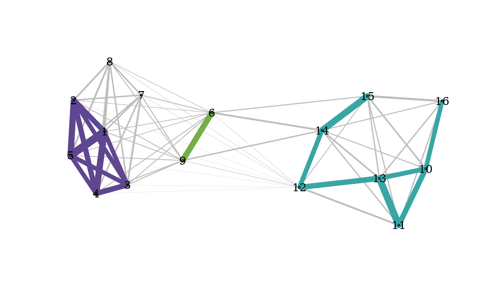
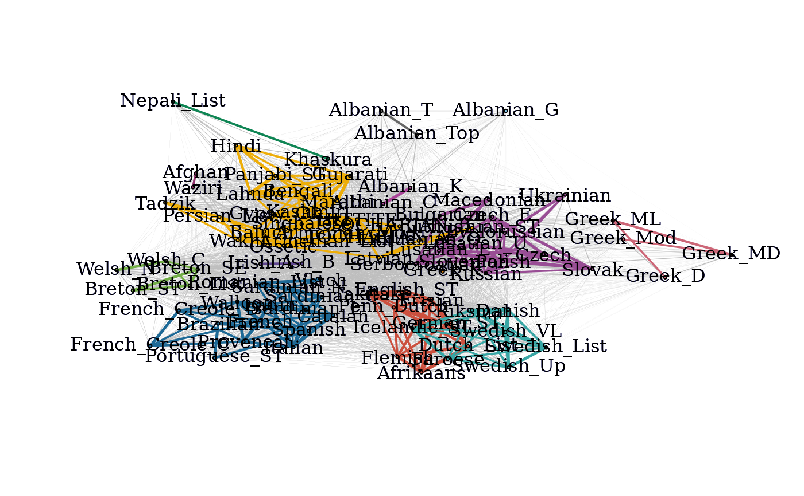

A wrapper function which computes the cohesion matrix, local depths, community graphs and provides a plot of the community graphs with connected components of the graph of strong ties colored by connected component.
Usage
pald(
d,
show_plot = TRUE,
show_labels = TRUE,
only_strong = FALSE,
emph_strong = 2,
edge_width_factor = 50,
colors = NULL,
...
)Arguments
- d
A matrix of pairwise distances or a
distobject.- show_plot
Set to
TRUEto display plot; the default isTRUE.- show_labels
Set to
FALSEto omit vertex labels (to display a subset of labels, use optional parametervertex.labelto modify the label list). Default:TRUE.- only_strong
Set to
TRUEif only strong ties, G_strong, should be displayed; the defaultFALSEwill show both strong (colored by connected component) and weak ties (in gray).- emph_strong
Numeric. The numeric factor by which the edge widths of strong ties are emphasized in the display; the default is
2.- edge_width_factor
Numeric. Modify to change displayed edge widths. Default:
50.- colors
A vector of display colors, if none is given a default list (of length 24) is provided.
- ...
Optional parameters to pass to the
igraph::plot.igraph. function. Some commonly passed arguments include:layoutA layout for the graph. If none is specified, FR-graph drawing algorithm is used.vertex.labelA vector containing label names. If none is given, the rownames ofcare usedvertex.sizeA numeric value for vertex size (default =1)vertex.color.vecA vector of color names for coloring the verticesvertex.label.cexA numeric value for modifying the vertex label size. (default =1)
Value
A list consisting of:
C: the matrix of cohesion valueslocal_depths: a vector of local depthsclusters: a vector of (community) cluster labelsthreshold: the threshold above which cohesion is considered particularly strongC_strong: the thresholded matrix of cohesion valuesG: the graph whose edges weights are mutual cohesionG_strong: the weighted graph whose edges are those for which cohesion is particularly stronglayout: a FR force-directed layout associated with G
Details
This function re-computes the cohesion matrix each time it is run.
To avoid unnecessary computation when creating visualizations, use the
function cohesion_matrix to compute the cohesion matrix which may then
be taken as input for local_depths, strong_threshold,
cohesion_strong, community_graphs, and plot_community_graphs.
For further details regarding each component, see the documentation for
each of the above functions.
References
K. S. Berenhaut, K. E. Moore, R. L. Melvin, A social perspective on perceived distances reveals deep community structure. Proc. Natl. Acad. Sci., 119(4), 2022.
Examples
D <- dist(exdata2)
pald_results <- pald(D)

pald_results$local_depths
#> 1 2 3 4 5 6 7 8
#> 0.6395671 0.5760317 0.5462169 0.6084392 0.6162338 0.4563023 0.4387963 0.4474603
#> 9 10 11 12 13 14 15 16
#> 0.4534687 0.4462963 0.4737302 0.4422985 0.5204365 0.5435185 0.4591270 0.3320767
pald(D, layout = as.matrix(exdata2), show_labels = FALSE)
C <- cohesion_matrix(D)
local_depths(C)
#> 1 2 3 4 5 6 7 8
#> 0.6395671 0.5760317 0.5462169 0.6084392 0.6162338 0.4563023 0.4387963 0.4474603
#> 9 10 11 12 13 14 15 16
#> 0.4534687 0.4462963 0.4737302 0.4422985 0.5204365 0.5435185 0.4591270 0.3320767
plot_community_graphs(C, layout = as.matrix(exdata2), show_labels = FALSE)
pald_languages <- pald(cognate_dist)

head(pald_languages$local_depths)
#> Irish_A Irish_B Welsh_N Welsh_C Breton_List Breton_SE
#> 0.5144152 0.5792306 0.3006146 0.3824964 0.4215615 0.4289304